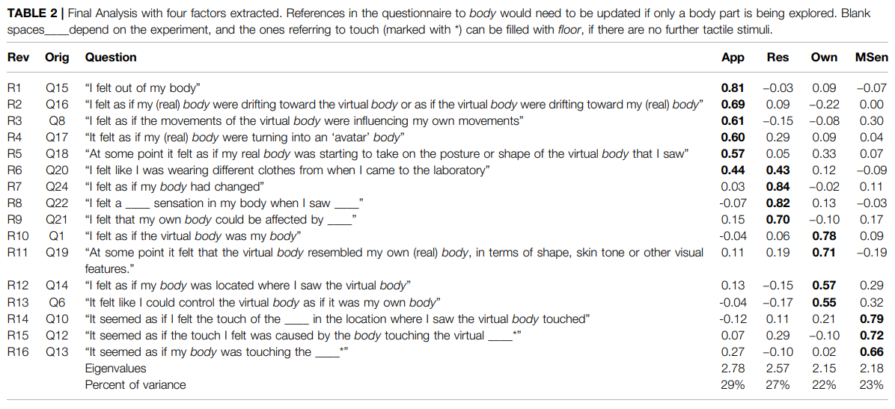

What is Avatar Embodiment?

Peck, T. C., & Gonzalez-Franco, M. (2021). Avatar embodiment. a standardized questionnaire. Frontiers in Virtual Reality, 1, 575943.


O’Dowd, A., & Newell, F. N. (2020). The rubber hand illusion is influenced by self-recognition. Neuroscience Letters, 720, 134756.

Fribourg, R., Argelaguet, F., Lécuyer, A., & Hoyet, L. (2020). Avatar and sense of embodiment: Studying the relative preference between appearance, control and point of view. IEEE transactions on visualization and computer graphics, 26(5), 2062-2072.